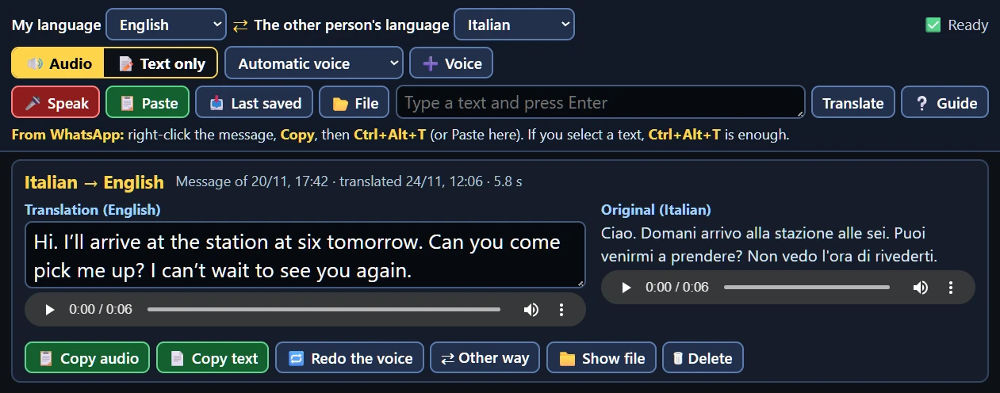
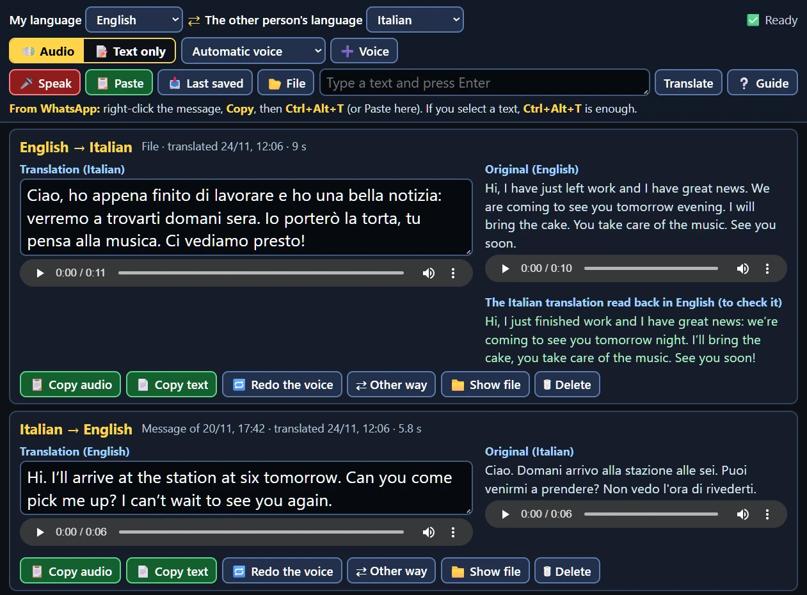
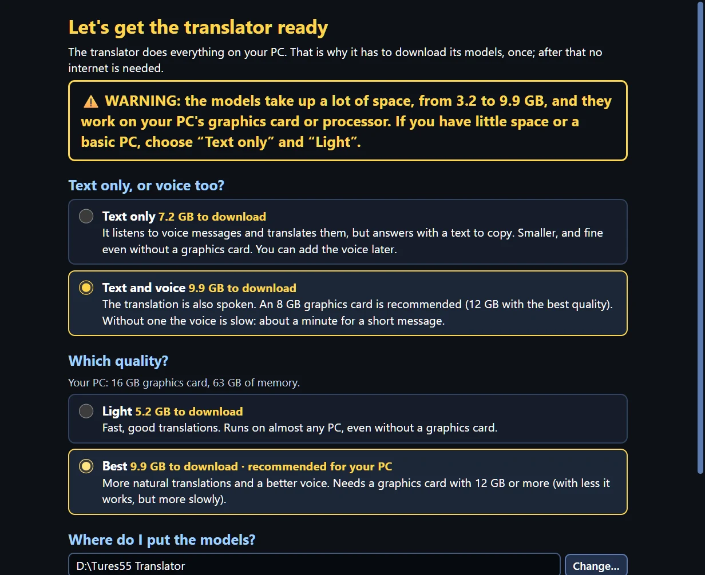

Free · Windows 10 and 11 · all on your PC
Speak your language.
They hear theirs.
Tures55 Translator translates voice and text messages from WhatsApp, Telegram and email. And when you answer, the translation comes out in your own voice.
You said · English
Hi! I have just left work and I have great news: we are coming to see you tomorrow evening. I will bring the cake, you take care of the music. See you soon!
They hear · Italian
Ciao, ho appena finito di lavorare e ho una bella notizia: verremo a trovarti domani sera. Io porterò la torta, tu occupati della musica. Ci vediamo presto!
Listen
One voice, ten languages.
Pick a language: you hear the same message translated, with the timbre of whoever recorded it. These are real translations made by the program, starting from a computer-made voice.
The original message · English
Hi! I have just left work and I have great news: we are coming to see you tomorrow evening. I will bring the cake, you take care of the music. See you soon!
The translation · Italian
Ciao, ho appena finito di lavorare e ho una bella notizia: verremo a trovarti domani sera. Io porterò la torta, tu occupati della musica. Ci vediamo presto!
Receive
Copy the message, read it, hear it.
- Copy. In WhatsApp, right-click the message (voice or text) and choose “Copy”.
- Paste. In the translator press “Paste”, or Ctrl + Alt + T from any program.
- Done. It works out the language by itself, translates it and, if you like, reads it to you.
You can also drag an audio file into the window, for Telegram, email and anything you can copy from.

The voice message you got, in Italian
What you hear, in English
Answer
Your answer has your voice.
Press “Speak” and say the message in your language, or type it. The translator says it in the other language in your voice. Press “Copy audio”, go to the chat and paste.
- Check reading: the translation comes back in your language, so you can see whether the meaning is right
- You can fix the text and redo the voice
- Text only: one switch, for when you don't need the voice

Private
Your messages stay at home.
Listening, translation and voice all run inside your PC. Internet is only needed to download the models the first time, and for updates.
- 0messages sent online
- 0accounts to create
- 5-11 sfor a message with voice, on an RTX card
Languages
Twenty languages, any combination.
Text and voice
- Italian
- English
- Spanish
- French
- German
- Portuguese
- Russian
- Chinese
- Japanese
- Korean
Text only
- Dutch
- Polish
- Czech
- Turkish
- Indonesian
- Vietnamese
- Arabic
- Persian
- Hindi
- Thai
In the “text only” languages voice messages are still heard and translated: the answer is written. The program itself is in English, Italian, Spanish, French, German and Portuguese.
What you need
First check how much space you have.
The program is small, but on first start it downloads the models it works with. You choose which, before downloading.
| Text only | Text and voice | |
|---|---|---|
| Light | 3.2 GB | 5.2 GB |
| Best | 7.2 GB | 9.9 GB |
| Your PC | Fine without a graphics card too | An 8 GB graphics card is recommended (Best: 12 GB). Without one, the voice takes about a minute |
Little space or a basic PC? “Text only” and “Light”: you can add the voice later. Tested on NVIDIA RTX 5070 Ti, RTX 3060 and on the processor alone; not yet on AMD and Intel cards.
Download
Three steps and you're talking.
- Download the file
Tures55-Translator-Setup.exe. - Open it. If Windows shows “Windows protected your PC”, click “More info” and then “Run anyway”. It happens with programs without a paid digital signature, like this one.
- Choose text or voice and the quality: the program tells you which suits your PC. After that it updates itself.

Supporters
Free for everyone.
Open code for those who support it.
Tures55 Translator is free, with no limits and no locked features. If you find it useful, a donation is the nicest way to say thanks and help it grow. As a thank-you you get:
Support on Buy Me a CoffeeThe complete, open code of the program, to study and modify for personal use.
Your name among the supporters of the project. You can stay anonymous if you prefer.
A supporter code, sent by email: paste it in the program and the donation invitation goes away.
The supporters' code may not be distributed, original or modified. To help people discover the program, share this page.
Frequently asked questions
Is it really free?
Yes, for personal use. No ads, no subscriptions and no locked features. Once each time Windows starts, a small donation invitation may appear; “Later” closes it.
Is it connected to WhatsApp?
No. Tures55 Translator is not made by, or connected with, WhatsApp or Meta. It works on what you copy and does not enter your account.
Are the translations always right?
No: they are automatic and may contain mistakes, especially in Japanese and Korean. That is why there is a check reading, and you can fix the text before sending it.
Can I use someone else's voice?
Only if they gave you permission. And tell your listeners the voice was made by a computer.
Does it work on the phone?
No, it is a Windows program. On the PC you use it with WhatsApp for Windows and with any program you can copy from.
Where do my messages go?
In a folder on your PC. From the program you can delete them one by one or all together.
How do I uninstall it?
Like any program: Windows Settings, Apps, Installed apps, Tures55 Translator, Uninstall.